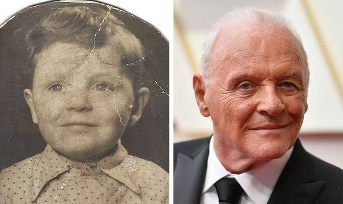

"Бу менинг телефоним экранидаги сурат. Ўзимга тез-тез: “Биз буни уддаладик, кичкинтойим” - деб далда бераман."

(Энтони Хопкинс, 84 ёш)
Энтони Хопкинс доимо телефонида ўзининг болалик суратини сақлайди. Агар бирор нарса ёмонлашса, ўзини койиш ўрнига, у шу суратни топади-да, ундаги ёш болага шундай дейди: "Биз бунинг уддасидан чиқамиз, кичкинтойим. Биз сен билан ҳамма нарсани эплаймиз."
Шу тариқа, у катта одам ҳолатидан ўзига қараб, биргина оддий ибора билан ички болакайга далда беради ва қўллаб-қувватлайди. Ўзига ҳимоя туйғусини беради. Ўзига самимий хайрихоҳлик ва маъқуллаш билдиради.
Бошқа томондан, Хопкинс айтишича, бу пайтда у ўзини катта, тажрибали ва доно одам сифатида ҳис қилади, босиб ўтган бутун йўлини ғурур билан англайди.
Бу эса унда қатъият ва ўз кучига ишонч уйғотади.
Ҳеч қандай ўз-ўзини ейиш йўқ. Фақат қабул қилиш, қўллаб-қувватлаш, самимийлик ва муҳаббат.